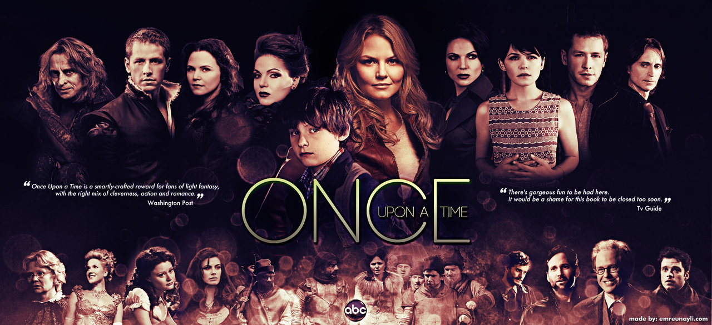

ALL TIME FAVE

I LOVE EVERYTHING ABOUT THIS SERIES.
It's a fantasy, action, drama that revolves around the city of Portland. Its main character, Nick Burkhardt, is a
detective in Portland PD who turns out to be a Grimm. He sees something that can't be seen ordinary people. He can
see if a person is a Wesen. A wesen is a creature that appears to be normal but has the ability to change its form
and turn into a creature with different capabilities and characteristics.

I ALSO LOVE EVERYTHING ABOUT THIS SERIES.
It's about the famous fairytale characters story but has different twists on it and when I say twists, I'm
talking about mind blowing twists. I love it because I know the fairytale characters in this series by heart because
their stories were the one that I grew up reading and watching, so watching it brings me back to my childhood but at the
same time, the way that the story was presented is more matured and IT REALLY HAS AN AMAZING PLOT because almost
everything is connected in a way that is very unpredictable and would always leave the viewers mind-blown and amazed.